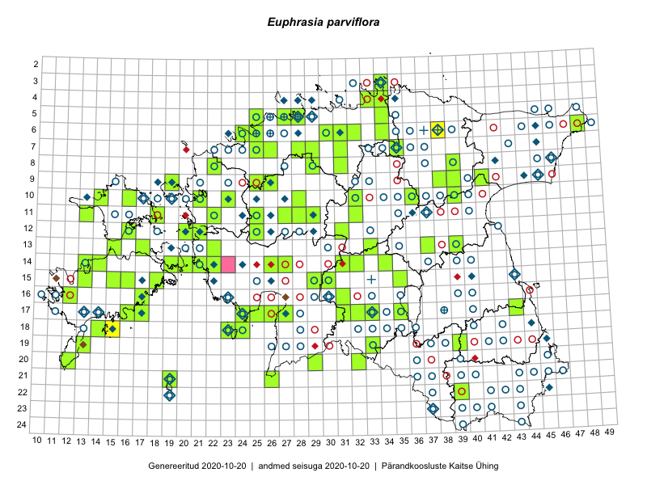

Euphrasia parviflora — madal silmarohi
Kaardile koondatud taksonid: Euphrasia parviflora Schag. (42)

Kaart põhineb 42 kirjel, neist:
vaatlusi 3
eksemplare 39
Kaasaegsed1 leiukohad asuvad 38 ruudus.
Andmed “Eesti taimede levikuatlasest”,2 sulgudes ruutude arv:3
● 1971–2005 (49)
○ 1921–1970 (141)
△ kuni 1920 (0)
+ hävinud (0)
? kaheldav (0)
Lisaruudud teistest andmebaasidest:4
ELF: 2006– . . . (0)
PKÜ: 2006– . . . (1)
ELF: 1971–2005 (0)
PKÜ: 1997–2005 (4)
| Ruut | Vaatleja(d) | Vaatlusaeg | Kirje PlutoFis |
|---|---|---|---|
| 18-14 | Mari Reitalu, Triin Reitalu | 2014-07-17 | ruut/ala: Euphrasia parviflora Schag. |
| 18-15 | Mari Reitalu | 2014-07-17 | ruut/ala: Euphrasia parviflora Schag. |
| 06-38 | Kaili Orav, Silvia Pihu | 2015-07-20 | ruut/ala: Euphrasia parviflora Schag. |
| 10-28 | Helena Sepman | 2008-08-16 | TU258003: Euphrasia parviflora Schag. |
| 13-17 | Toomas Kukk | 2009-08-31 | TAA0037531: Euphrasia parviflora Schag. |
| 13-17 | Toomas Kukk | 2009-08-31 | TAA0037532: Euphrasia parviflora Schag. |
| 10-23 | Toomas Kukk | 2007-08-18 | TAA0037564: Euphrasia parviflora Schag. |
| 05-28 | Olev Abner | 2014-09-19 | TALL C009281: Euphrasia parviflora Schag. |
| 13-39 | Thea Kull | 2015-09-03 | TAA0116942: Euphrasia parviflora Schag. |
| 12-21 | Toomas Kukk, Tiit Hallikma | 2015-08-24 | TAA0134910: Euphrasia parviflora Schag. |
| 07-31 | Erkki Otsman | 2016-07-22 | TAA0136715: Euphrasia parviflora Schag. |
| 17-17 | Toomas Kukk, Meeli Mesipuu | 2016-08-12 | TAA0137031: Euphrasia parviflora Schag. |
| 08-31 | Toomas Kukk | 2013-08-21 | TAA0112231: Euphrasia parviflora Schag. |
| 14-13 | Toomas Kukk | 2012-08-23 | TAA0112354: Euphrasia parviflora Schag. |
| 11-13 | Toomas Kukk | 2012-08-14 | TAA0112445: Euphrasia parviflora Schag. |
| 06-48 | Eerik Leibak | 2009-08-10 | TAA0112679: Euphrasia parviflora Schag. |
| 06-30 | Sander Laherand, Toomas Kukk | 2016-08-30 | TAA0135899: Euphrasia parviflora Schag. |
| 11-18 | Sander Laherand, Nele Jõessar, Peedu Saar | 2016-08-08 | TAA0135840: Euphrasia parviflora Schag. |
| 15-18 | Hannes Pehlak, Mari Reitalu | 2016-08-26 | TAA0137763: Euphrasia parviflora Schag. |
| 21-26 | Indrek Tammekänd, Sirje Azarov | 2016-07-18 | TAA0137651: Euphrasia parviflora Schag. |
| 14-14 | Mari Reitalu, Sirje Azarov | 2016-07-26 | TAA0137652: Euphrasia parviflora Schag. |
| 14-20 | Mari Reitalu, Sirje Azarov | 2016-08-18 | TAA0137658: Euphrasia parviflora Schag. |
| 14-19 | Mari Reitalu, Sirje Azarov | 2016-08-17 | TAA0137659: Euphrasia parviflora Schag. |
| 15-16 | Meeli Mesipuu, Maret Gerz | 2016-08-13 | TAA0133720: Euphrasia parviflora Schag. |
| 17-16 | Aira Alasi, Sirje Azarov | 2015-08-12 | TAA0133669: Euphrasia parviflora Schag. |
| 17-16 | Aira Alasi, Sirje Azarov | 2015-08-17 | TAA0133671: Euphrasia parviflora Schag. |
| 11-22 | Tõnu Ploompuu | 2015-08-23 | TAA0118927: Euphrasia parviflora Schag. |
| 10-21 | Tõnu Ploompuu | 2015-08-21 | TAA0118933: Euphrasia parviflora Schag. |
| 16-17 | Ott Luuk, Peedu Saar | 2016-09-01 | TAA0139090: Euphrasia parviflora Schag. |
| 08-29 | Thea Kull, Ott Luuk | 2017-08-09 | TAA0142315: Euphrasia parviflora Schag. |
| 19-33 | Elle Rajandu, Liina Oja | 2016-07-18 | TAA0141554: Euphrasia parviflora Schag. |
| 20-12 | Mari Reitalu, Sirje Azarov | 2016-08-08 | TAA0145503: Euphrasia parviflora Schag. |
| 17-31 | Indrek Tammekänd | 2016-07-09 | TAA0145521: Euphrasia parviflora Schag. |
| 17-33 | Peedu Saar, Toomas Kukk, Martin Tikk | 2019-08-27 | TAA0149026: Euphrasia parviflora Schag. |
| 09-19 | Peedu Saar, Toomas Kukk | 2019-09-17 | TAA0149031: Euphrasia parviflora Schag. |
| 14-32 | Meeli Mesipuu, Timo Luhamäe | 2019-08-29 | TAA0149847: Euphrasia parviflora Schag. |
| 15-30 | Meeli Mesipuu, Timo Luhamäe | 2019-08-28 | TAA0149852: Euphrasia parviflora Schag. |
| 15-35 | Timo Luhamäe, Meeli Mesipuu | 2019-08-27 | TAA0149864: Euphrasia parviflora Schag. |
| 07-31 | Timo Luhamäe, Peedu Saar | 2019-08-05 | TAA0149882: Euphrasia parviflora Schag. |
| 16-12 | Mari Reitalu | 2018-08-27 | TAA0149951: Euphrasia parviflora Schag. |
| 14-31 | Ott Luuk, Eerik Leibak | 2019-08-28 | TAA0150242: Euphrasia parviflora Schag. |
| 14-31 | Ott Luuk, Eerik Leibak | 2019-08-28 | TAA0150243: Euphrasia parviflora Schag. |
Kaasaegsed leiukohad (tähistatud värvitud ruutudega) põhinevad peamiselt 2014–2019 välitööandmetel. Väiksemal määral on andmebaasi kantud vanemaid leiuandmeid aastatest 2006–2013.↩︎
Kukk, T., Kull, T., Eesti taimede levikuatlas. Eesti Maaülikool, Põllumajandus- ja Keskkonnainstituut, Tartu, 2005.↩︎
NB! 2005. aasta atlase andmestikus katavad uuemad leiud vanemaid. Näiteks kui liik on ruudus registreeritud 1971–2005, siis pole võimalik öelda, kas ta oli sellest ruudust teada ka enne 1970. aastat. Vana atlase andmetel hävinud ja kaheldavaid leiukohti pole hilisemate (taas)leidude põhjal korrigeeritud.↩︎
Eestimaa Looduse Fondi (ELF) ja Pärandkoosluste Kaitse Ühingu (PKÜ) andmebaasid sisaldavad inventeeritud koosluste kirjeldusi ja liigiloendeid. Neist andmekogudest on kaardile lisatud lisatud vaid need ruudud, millest uue atlase andmekogus taksoni kohta kirjeid veel pole. Kõrvale on jäetud teadaolevalt kaheldavad määrangud. Kaartidel katavad uuema perioodi andmed vanemaid, PKÜ omad ELFi omi. Kattumise tõttu võib kaardil näha olla vähem mingi kategooria ruute kui legendis olev arv näitab. ELFi ja PKÜ andmed ei kajastu hetkel vaatluste tabelis ega ruutude liigiloendites.↩︎